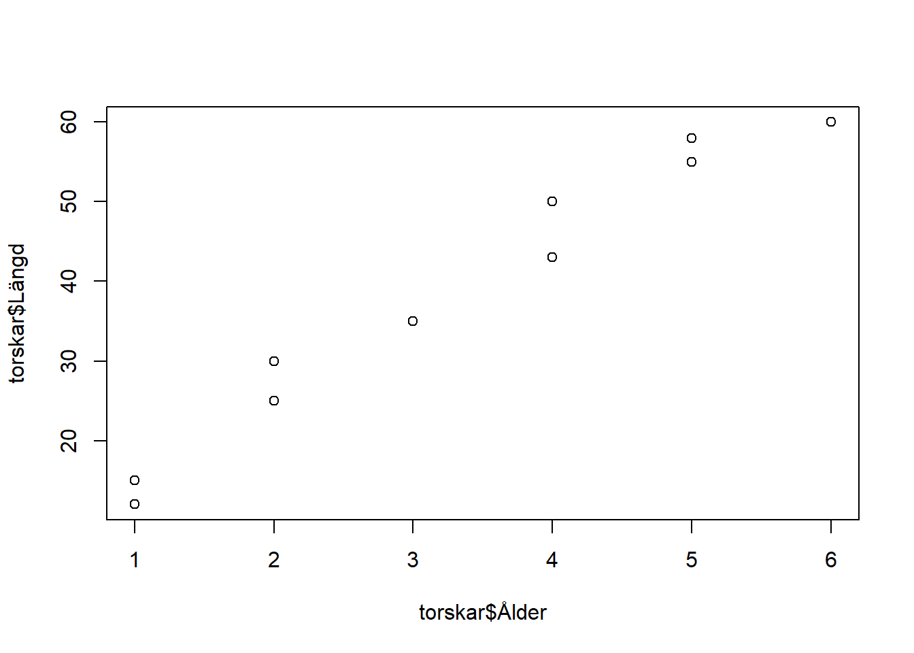
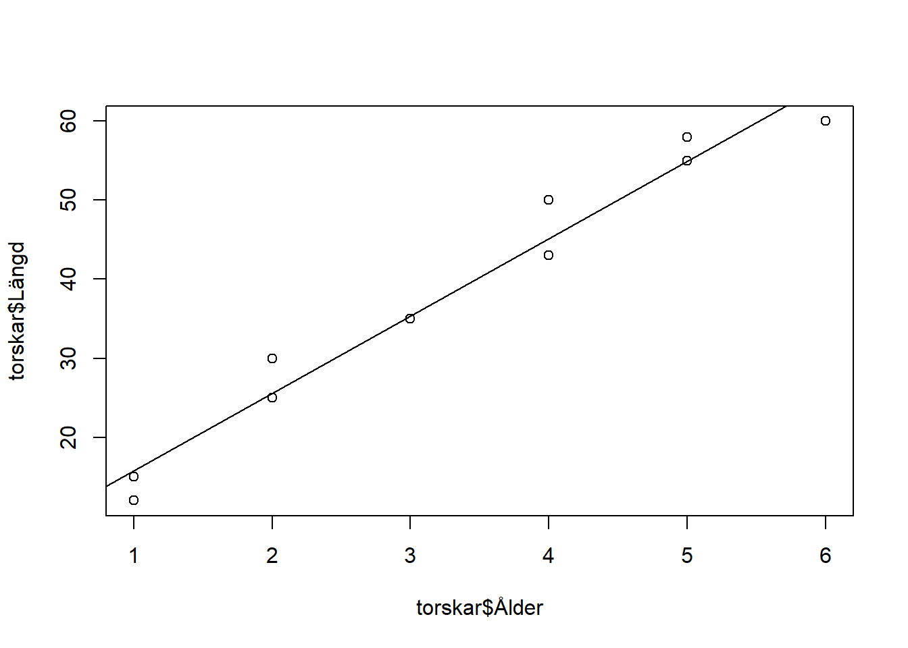
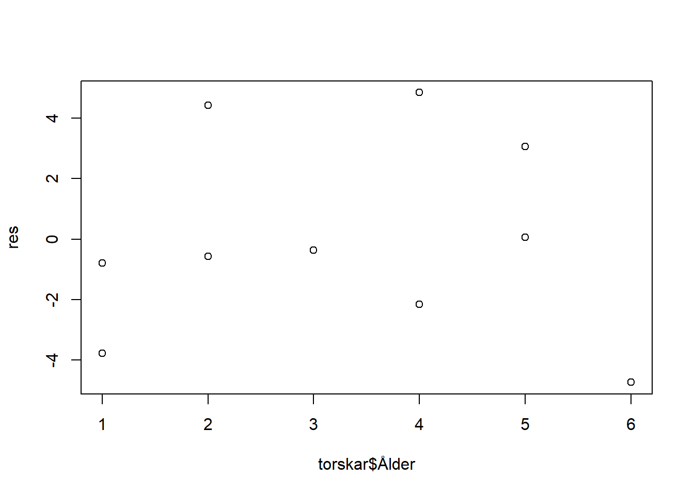
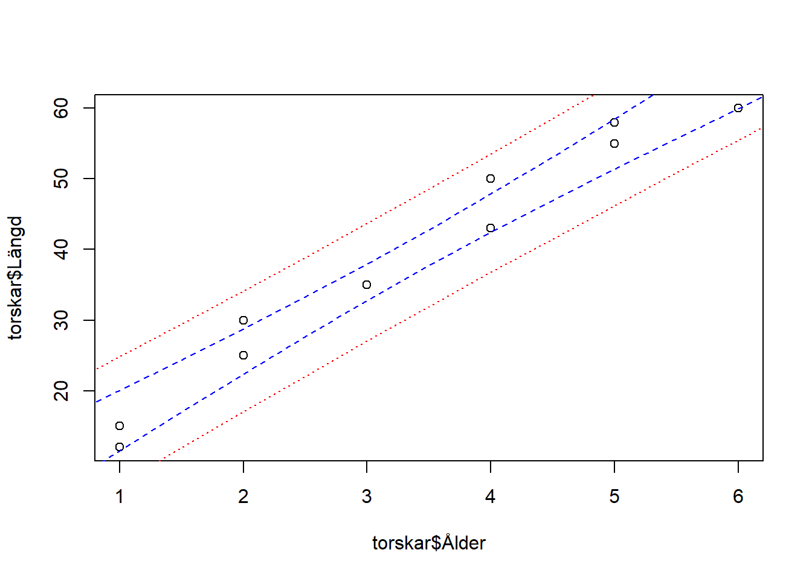

bekanta dig med lite av de funktioner som finns i R vad det gäller korrelations- och regressionsanalys
arbeta med Miniprojekt II.
Förberedelseuppgifter
Du måste ha arbetat ordentligt med de väsentligaste begreppen i kapitlet om regression i kursboken. Repetera vid behov begreppen regresionslinje, residualer, konfidensintervall för förväntat värde samt prediktionsintervall.
Du skall ha gjort följande uppgifter innan du kommer till laborationen.
Hemuppgift 1
Gör uppgift 6.10 i arbetsmaterialet.
Introduktion - regressionsanalys i R
1 Längd och ålder hos torskar
För 10 torskar har vi värden på variablerna Längd (cm) och Ålder (år).
Fisk
1
2
3
4
5
6
7
8
9
10
Längd (cm)
15
30
35
50
55
60
58
25
12
43
Ålder (år)
1
2
3
4
5
6
5
2
1
4
Uppgift 1.1
Börja med att mata in dessa värden i R. Lägg in värdena i en tabell (dataframe), som du döper till torskar, med värdena i två kolumner: Längd och Ålder. Tänk på att R är känslig för stor och liten bokstav och om man använder ä eller a. Datamaterialet skall alltså innehålla 2 kolumner med 10 värden i varje kolumn.
Beskriv data. Gör en grafisk beskrivning av sambandet genom att rita ett spridningsdiagram med Ålder på x-axeln och Längd på y-axeln. Ser det ut som det finns ett linjärt samband?
plot(torskar$Ålder, torskar$Längd)

Svar:
2 Korrelationsanalys av samband mellan längd och ålder hos torskar
Vi börjar med att undersöka sambandet mellan variablerna med hjälp av korrelationskoefficienten.
Uppgift 2.1
Beräkna korrelationskoefficienten (Pearson) och testa om den är skild från noll. Tyder resultaten på att det finns något linjärt samband mellan Längd och Ålder?
Modell: Låt \(X\) vara längd och \(Y\) vara ålder på fiskar. Vi antar att \(X\) och \(Y\) tillhör en bivariat (2-dimensionell) normalfördelning med korrelation \(\rho = \frac{COV(X,Y)}{\sqrt{V(X)\cdot V(Y)}}\). Korrelationen skattas med korrelationskoefficienten, d.v.s. \(\hat{\rho}=r\), där \(r = \frac{SS_{XY}}{\sqrt{SS_X \cdot SS_Y}}\).
cor(torskar$Ålder, torskar$Längd)
[1] 0.982841
Hypoteser:\(H_0: \rho=0\) och \(H_1: \rho \neq 0\)
Under antagande att normalfördelning gäller kommer teststorheten \(t = r\sqrt{\frac{n-2}{1-r^2}}\) vara approximativt normalfördelad. Det går därmed att testa hypotes med ett t-test. Detta test görs med R med rutinen cor.test.
cor.test(torskar$Ålder, torskar$Längd)
Pearson's product-moment correlation
data: torskar$Ålder and torskar$Längd
t = 15.071, df = 8, p-value = 3.715e-07
alternative hypothesis: true correlation is not equal to 0
95 percent confidence interval:
0.9266410 0.9960742
sample estimates:
cor
0.982841
Svar:
3 Enkel linjär regression för samband mellan längd och ålder hos torskar
Vi skall nu undersöka hur sambandet mellan variablerna ser ut genom att anpassa en rät linje till data. Kommandot lm(y ~ x) anpassar en linjär modell för den beroende variabeln y som funktion av en eller flera förklarande variabler x (lm är förkortning av linear model). Sedan kan vi få ut olika egenskaper hos modellen och skattningarna med ytterligare kommandon.
modell <-lm(Längd ~ Ålder, data=torskar)modell # skattningarna av parametrarna intercept och lutning på linjen
Utför regressionsanalysen ovan. Identifiera följande mått i utskriften:
-Förklaringsgrad (\(R^2\))
-Standardfel för residualer (\(s_e\))
-Skattningar av koefficienterna \(\beta_0\) och \(\beta_1\)
-Konfidensintervall för lutningen
-p-värde från t-test av nollhypotesen att lutningen är noll
Uppgift 3.2
För att få den skattade regressionslinjen utritad i figuren ni skapade tidigare kan du använda kommandot
plot(torskar$Ålder, torskar$Längd)abline(modell)

Kontroll av förutsättningar
Vi skall nu kontrollera tre av de antagande som finns i analysen, nämligen (1) residualer är obereonde, (2) normalfördelade och (3) har lika varians. Antagandet om oberoende bedöms genom att ta reda på hur data är insamlat. I detta fall vet vi inte så mycket, förutom att mätningarna är gjorda på olika individer fiskade under en dag. Vi finner ingen anledning att inte anta oberoende, och undersöker de två återstående antaganden genom att studera residualerna. Residualerna i den anpassade modellen beräknas med kommandot
Undersök om residualerna har lika varianser (d.v.s. konstant spridning kring linjen) genom att plotta residualerna mot x-variablen Ålder. Verkar antagandet stämma?
plot(torskar$Ålder, res)

Svar:
Uppgift 3.4
Undersök om residualerna är normalfördelade genom att göra en Q-Q-plot med funktionen qqnorm.
Verkar antagandet om normalfördelning vara uppfyllt?
# skriv din R-kod här
Svar:
Prognoser och konfidensintervall
En regressionsmodell kan användas för att göra prognos eller prediktion av det förväntade värdet eller det enskilda värdet av \(y\) givet \(x=x_0\). I formellsamlingen har vi följande formler för konfdensintervall (se formelsamlingen för förklaring av alla symboler).
Konfidensintervall för förväntat värde:\[I_{\mu(x_0)}: b_0+b_1x_0 \pm t_{1-\alpha/2,n-2}\sqrt{s^2_e(\frac{1}{n}+\frac{(x_0-\bar{x})^2}{SS_x})}\]
Konfidensintervall för enskilt värde (även kallat prediktionsintervall):\[I_{y(x_0)}: b_0+b_1x_0 \pm t_{1-\alpha/2,n-2}\sqrt{s^2_e(1+\frac{1}{n}+\frac{(x_0-\bar{x})^2}{SS_x})}\]
Uppgift 3.5
Rita prediktioner av längd givet ålder med konfidensintervall för förväntade värden och för enskilda värden (prediktionsintervall). Först använder vi modellen för att göra prediktioner för olika värden på ålder.
För att få intervallen utritade i figur ritar vi linjer med åldrer på x-axeln och tillhörande intervallgränser på y-axeln. För att skilja på intervallen ritar vi konfidensintervallet med streckade blå linjer och prediktionsintervallet med prickade röda linjer.
Varför är prediktionsintervallet (det blåa) bredare än konfidentsintervallet för det förväntade värdet (det röda)?
# Gör prediktioner för en ålderssekvens i steg om halvår:# 0.5, 1.0, 1.5, …, 7.0, 7.5:x0 <-data.frame(Ålder=seq(0.5,7.5,0.5))mu0konf <-predict(modell, x0, interval="confidence") # konfidensintervally0pred <-predict(modell, x0, interval="prediction") # prediktionsintervallplot(torskar$Ålder, torskar$Längd)lines(x0$Ålder, mu0konf[,"lwr"], col="blue", lty=2) # undre (lower) gränsenlines(x0$Ålder, mu0konf[,"upr"], col="blue", lty=2) # övre (upper) gränsenlines(x0$Ålder, y0pred[,"lwr"], col="red", lty=3)lines(x0$Ålder, y0pred[,"upr"], col="red", lty=3)

Svar:
Uppgift 3.6
Vilken längd förväntas en sju år gammal torsk ha? Ange med konfidensintervall!.
# skriv in din R-kod här
Svar:
4 Regressionsanalys av samband mellan koncentration och absorbans
I laborationen “Proteinbestämning enligt Bradford-metoden” i kursen cellbiologi undersöktes absorbansen hos prov med olika spädningar av Bovint Serum Albumin (BSA)-standard. Prov med 0–10 \(\mu\)g protein spädes till 100 \(\mu\)l med vatten och två prover förberedes per koncentration.
Data för en laborationsgrupp finns i filen data/lab4_filer/Labbdata.RData.
Modell: Enligt Lambert-Beers lag gäller att absorbansen (A) kan beskrivas som en linjär funktion av koncentrationen (c): \(A=k\cdot c\) där konstanten \(k\) beror på ämnets molära absorptionskoefficient vid en viss våglängd samt kyvettens längd. Vid mätningar får man naturligtvis räkna med en viss slumpmässig variation, en rimlig modell är att absorbansen vid mätning nr \(i\), \(A_i\), beskrivs linjärt av koncentrationen ci plus ett slumpmässigt fel:
där \(\epsilon_i\) är oberoende och normalfördelad slumpfel med väntevärde 0 och standardavvikelse \(\sigma\). Här motsvaras konstanten \(\beta_1\) av den tidigare \(k\) medan \(\beta_0\) är absorbansen i den lösning som BSA:n är löst.
Uppgift 4.1
Undersök baserat på data från laborationen om den linjära regressionsmodellen ovan är rimlig att anpassa.
Hur mycket ökar absorbansen då man ökar koncentrationen en enhet? Ange ett 95 % konfidensintervall för denna storhet.
Svar:
Uppgift 4.3
Vad är den förväntade absorbansen för ett prov med koncentration 50 (mg/l). Ange ett 95 % konfidensintervall för denna storhet. Skapa först en dataframe där värdet för koncentrationen läggs in.
Vi har ett prov med koncentration 50 (mg/l). Ange ett 95 %-igt prediktionsintervall för absorbansen i just detta prov.
# Skriv din R-kod här
Svar:
Uppgift 4.5
Huvudsyftet med mätningarna var att erhålla en standardkurva för hur absorbansen påverkas av koncentrationen. Anta att vi på ett prov med okänd koncentration \(c_0\) uppmätte en absorbans på 0.43. Vilken koncentration kan det svara mot.
Skatta koncentrationen utifrån kännedom av absorbansen. En skattning av \(c_0\) kan vi få fram genom att lösa ut \(x\) ur sambandet \(0.43 = \beta_0 + \beta_1\cdot x\) så här (om den anpassade modellen sparats i variabeln modell2). Vad blev den skattade koncentrationen?
4.1 Fortsätt med att göra klart Miniprojekt II, se laboration 3
Några svar:
2.1. Ja! \(r = 0.9828, t=15.071\); p-värde=0.000 - Man kan förkasta hypotesen om inget samband
3.1. \(R^2=0.966\); \(s_e = 3.443\); \(\hat{\beta_0}=b_0=5.993\); \(\hat{\beta_1}=b_1=9.790\); \(I_{\beta_1}=(8.29, 11.29)\); \(p=3.72\cdot 10^{-7}\)
3.6. Förväntad längd vid åldern 7 år är 74.52; konfidensintervall är \((68.43,\,80.61)\)
4.1. Normalfördelat: Njä; Konstant varians: Ej helt lätt att bedöma (för få värden)
4.2. \(0.0008\) intervall: \((0.00063,\,0.0011)\)
4.3. konfidensintervall: \((0.425,\,0.441)\)
4.4. prediktionsintervall: \((0.407,\,0.459)\)
4.5. \(c_0\) skattas till \(46.6\) mg/l
Sammanfattning R
cor(x, y) #Korrelationskoefficientcor.test(x, y) #Test för korrelationskoefficientlm(y ~ x) #Regression av y som funktion av xlm(y ~ x, data=dataframen) # dataframen som innehåller x och y ... i ett visst datamaterialsummary(modell) #Skattningar, signifikanser, etc,confint(modell) # Konfidensintervall för parametrarnapredict(modell, x0) # Prediction av förväntat värde när x=x0predict(modell, x0, interval="confidence") #… med konfidensintervallpredict(modell, x0, interval="prediction") #… med prediktionsintervallresiduals(modell) #Residualer